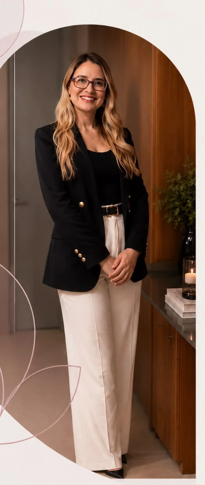

Atendimento
exclusivamente
online
Psicoterapia online
para mulheres adultas
Um espaço de psicoterapia para você desenvolver
mais clareza, equilíbrio e bem-estar na sua vida.
Não atendemos plano de saúde
Sessões somente online
Como funciona
a psicoterapia
A psicoterapia é um espaço para
compreender o que você vive, desenvolver
novas formas de lidar com a ansiedade e
construir uma vida mais alinhada com
o que realmente importa para você.
Vamos explorar o que você sente, pensa e faz,
identificando padrões que podem estar
mantendo a ansiedade e o sofrimento no dia a dia.
Você passa a entender melhor como suas emoções,
pensamentos, comportamentos e o seu contexto
de vida se conectam, tornando mais claro o que
dificulta e o que favorece o seu bem-estar.
Juntas, construímos estratégias práticas e
personalizadas para lidar com a ansiedade,
o estresse e outras demandas que fazem parte
da sua rotina.
O objetivo é que você se sinta mais segura
para fazer escolhas, estabelecer limites, fortalecer
suas relações e construir uma vida com mais equilíbrio
e sentido, de acordo com os seus valores.
Mais do que aliviar sintomas,
você desenvolve recursos para lidar com os desafios
de forma mais consciente e alinhada com quem você é.
Não atendemos plano de saúde
Sessões somente online

Sobre mim
Psicóloga clínica e hospitalar
CRP 11/09722
Formada pela Unifor em 2015, atuo com
ética, escuta acolhedora e base científica.
Atendo principalmente
mulheres adultas.
Atendimento online,
com a mesma qualidade
e acolhimento do presencial.
Experiência com ansiedade,
depressão, doenças crônicas,
luto, autoestima e
relacionamentos.
FAQ
A psicoterapia online pode ser tão eficaz quanto a presencial para diversas demandas, incluindo ansiedade e depressão. A adequação do formato depende das necessidades de cada pessoa e das condições para realizar os encontros com privacidade.
A primeira sessão é um momento para conhecer sua história, compreender suas dificuldades e expectativas, além de explicar como funciona o processo terapêutico.
Os atendimentos são realizados semanalmente, com duração de 50 minutos, exclusivamente online, pela plataforma Google Meet, em horário previamente combinado. Para participar, basta ter uma conexão estável e um ambiente reservado que garanta sua privacidade.
Sim. Meu atendimento clínico online é direcionado a mulheres adultas, com foco em questões emocionais, comportamentais e relacionais.
Os atendimentos são particulares, com pagamento via Pix ou cartão de crédito. As condições de pagamento são apresentadas individualmente durante o contato para agendamento.
Os atendimentos são particulares. Caso seu plano ofereça reembolso para psicoterapia, você poderá consultar a operadora sobre as condições e a documentação necessária.
Não. Você pode procurar psicoterapia para compreender melhor suas emoções, lidar com dificuldades nos relacionamentos, trabalhar sua autoestima ou desenvolver novas maneiras de enfrentar situações do cotidiano.
A TCC busca compreender as relações entre pensamentos, emoções e comportamentos. Ao longo do processo, trabalhamos na identificação de padrões que contribuem para o sofrimento e no desenvolvimento de estratégias mais funcionais para lidar com as dificuldades.
Guia gratuito + conteúdos por e-mail
um espaço de leitura, reflexão e autocuidado
20 páginas com 5 temas que costumam aparecer nos atendimentos, com auto-observação e caminhos práticos para refletir no seu ritmo.
Conteúdos sobre ansiedade, autoestima e relacionamentos, com a escuta e o olhar da TCC, no perfil @zitapsi.